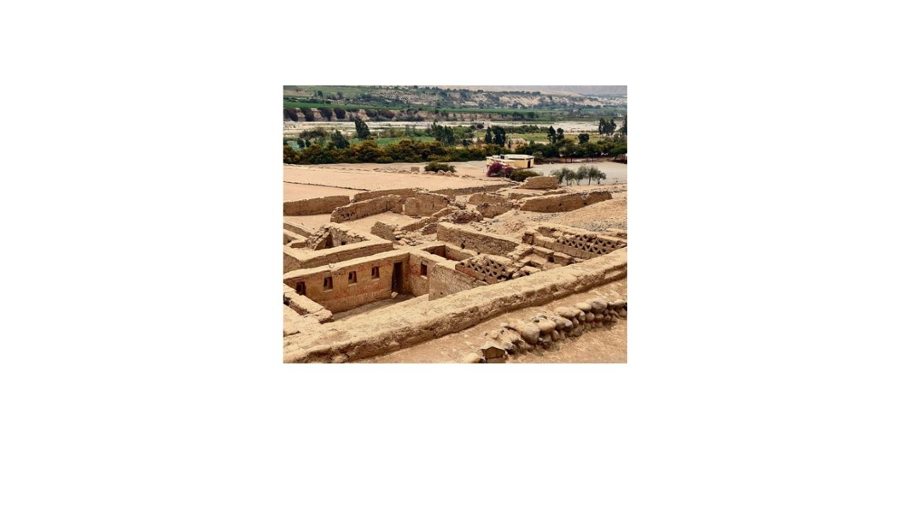

Excursiones en Costa para Cruceros


Excursiones en Costa Exclusivas Saliendo del Puerto de Pisco (Paracas)
Tours personalizables e íntimos con vida silvestre marina y sitios incas
Detalle
Reserva tu excursión en tierra directamente con nosotros para obtener el mejor valor. Nuestro asesor de tours te ayudará con gusto con preguntas y disponibilidad. Ofrecemos tours personalizables de medio día o día completo adaptados a tu grupo, gestionados por nuestro personal de habla inglesa/hispana. Disfruta de una experiencia más íntima lejos de las multitudes, con South Americans Secrets asegurando un regreso seguro y puntual a tu barco. Nuestras excursiones incluyen observación de vida silvestre marina, exploración de antiguos sitios incas y visitas a áreas naturales protegidas.
Actividades:
- - Vuelo sobre las Líneas de Nazca
- - Tambo Colorado (sitio antiguo Inca)
- - Observación de vida silvestre
- - Reserva Natural de Paracas
- - Destilería de Pisco y Valle vitivinícola.
Incluye:
- Recojo y regreso directamente desde el puerto/muelle
- Todas las entradas
- Impuesto portuario
- Seguro personal en caso de lesiones
- Transporte privado.
- Guía profesional de habla inglesa/hispana
No Incluye:
- Extras y propinas.
Precio:
Consultar
Reservar Ahora